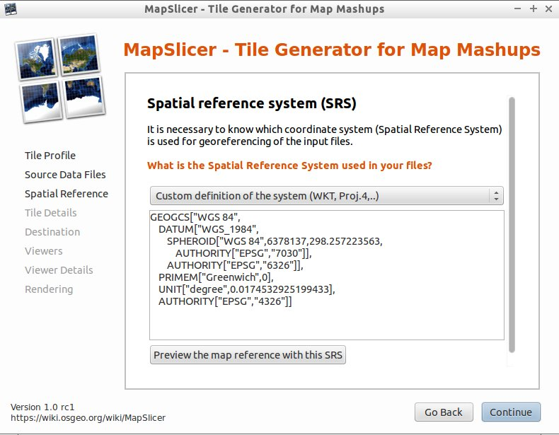
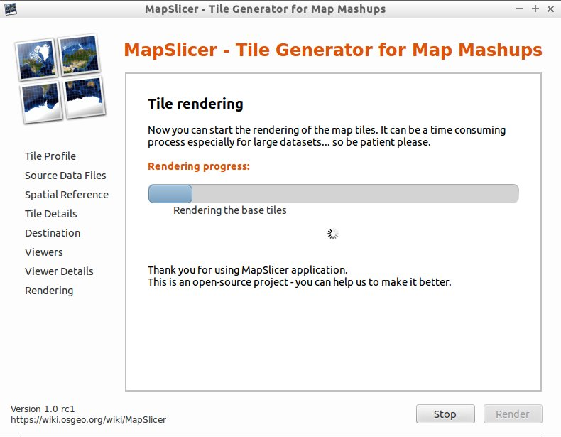

Guide de démarrage rapide de MapSlicer¶
MapSlicer offre un moyen simple de créer un ensemble de tuiles à partir de n’importe quelle image de carte géoréférencée. Les tuiles peuvent alors être présentées comme une superposition de carte géoréférencées sur un serveur web. Il suit la spécification Tile Map Service (TMS) de l” Open Source Geospatial Foundation’s (OSGeo’s)
- Options d’entrée : n’importe quel fichier image géoréférencé, par exemple, un fichier TIFF, JPEG à partir d’ArcGIS ou QGIS.
- Options de sortie : un ensemble de répertoires avec des images en mosaïque qui peuvent être copiées sur un serveur web pour la présentation comme une superposition de géoréférencées.
- Points forts : MapSlicer est un logiciel simple, gratuit, open-source, avec un assistant simple, décrit ci-dessous, pour guider les options.
MapSlicer tire parti du fait que`Google Maps <https://www.google.com/maps>`_ , Microsoft Bing , Yahoo Maps et d’autres fournisseurs de cartographie en ligne, y compris OpenStreetMap utilisent la même projection et par conséquent, le profil de tuilage et les tuiles sont compatibles. MapSlicer prépare les tuiles à l’aide de cette spécification comme un moyen facile et rapide de préparer une carte géoréférencée dans une page web.
Démarrer MapSlicer¶
Lancez MapSlicer depuis le menu de Geospatial, dans le sous-menu Outils spatiaux.
Sélectionnez le Tile Profile (profil de tuile). Choisissez Image Based Tiles (raster) pour la publication web standard. Cliquez sur Continue.

Choisissez le Source Data Files (source de données). Parcourir l’arborescence de fichier pour sélectionner l’image raster que vous voulez tuiler. Il est également possible de sélectionner une couleur NODATA qui apparaîtra comme transparente dans l’image résultante. Cliquez sur Continue.

Spécifier le Spatial Reference System / Coordinate System de l’image. Spécifiez le numéro d’identification de la base de données EPSG. Cliquez sur Continue.
Spécifiez les détails de la Tile Pyramid (pyramide de tuiles). Les paramètres par défaut pour les niveaux de zoom et de format de fichier sont souvent les meilleurs. Cliquez sur Continue.

Spécifiez les détails sur le Destination folder and Addresses / URLs pour le jeu de tuiles. Si vous ne les connaissez pas, ils peuvent être ajoutés dans les fichiers de googlemaps.html et de openlayers.html par défaut après la génération des tuiles. Cliquez sur Continue..

Cochez l’option Viewers that should be generated (visualiseurs qui seront générés). Par défaut, un fichier openlayers.html est généré. Cliquez sur Continue.

Spécifier les Details for generating the Viewers tels que le titre, les avis de copyright et les clés de l’API. Si vous ne connaissez pas ces éléments, ils peuvent être ajoutés par défaut dans les fichiers googlemaps.html / openlayers.html après la génération des tuiles. Cliquez sur Continue.

Cliquez sur Render pour lancer le rendu de l’image.
Lorsqu’il est terminé, MapSlicer fournit un lien vers le jeu de tuiles fini.

- Ouvrez le fichier openlayers.html dans un navigateur web pour afficher le jeu de tuile en surimpression de la carte en ligne. Pour présenter cela sur le web, il vous suffit de copier le jeu de tuiles entier et tous ses sous-répertoires sur un serveur web et de modifier les fichiers googlemaps.html ou openlayers.html selon les besoins.

{kind=link}
{kind=link}
Utiliser gdal2tiles pour créer une base de données MBTiles¶
MapSlicer est essentiellement une interface graphique pour le script gdal2tiles.py. Une version actualisée du gdal2tiles.py est également présente sur le disque OSGeoLive. Les arbres de tuiles créés par ce logiciel sont utilisables avec le programme mb-util pour créer une base de données mbtiles, pour une utilisation avec des logiciels de smartphone comme Geopaparazzi.
Pour créer une base de données SQLite MBTiles partir de l’arborescence de la tuile nouvellement créé, ouvrez un terminal, puis
cp data/raster/bluemarble.tif .
mapslicer # (select /home/user/bluemarble.tif for input, JPEG as format)
mb-util --scheme=tms --image_format=jpg bluemarble bluemarble.mbtiles
qgis bluemarble.mbtiles
Pour plus d’informations sur l’exécution de ces outils, voir gdal2tiles.py –help et mb-util –help.